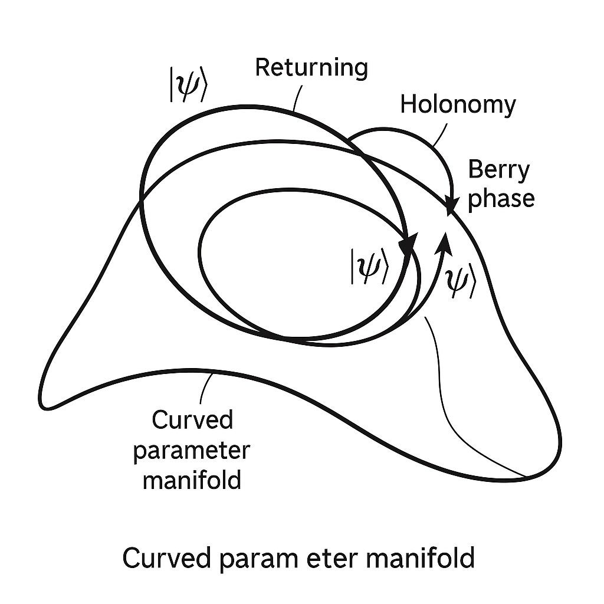
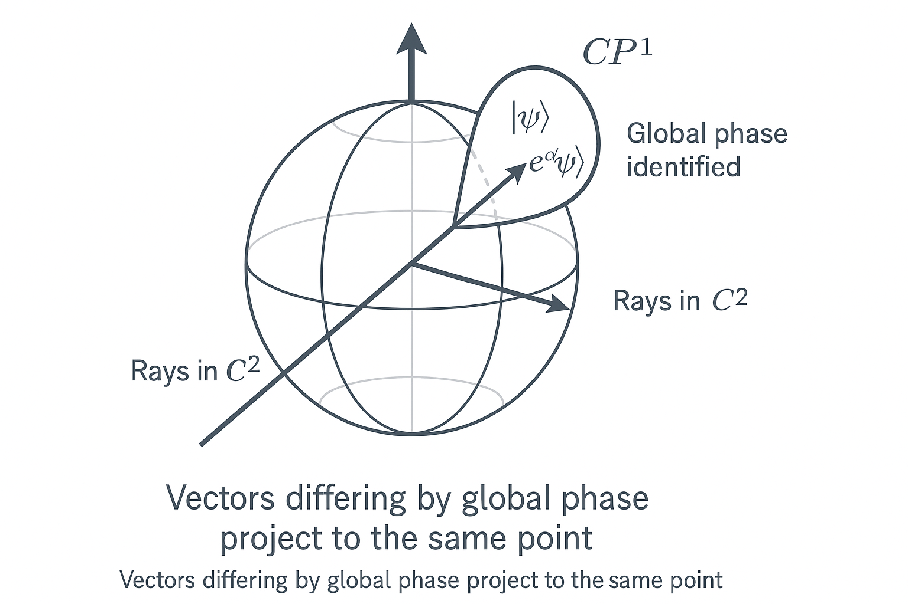
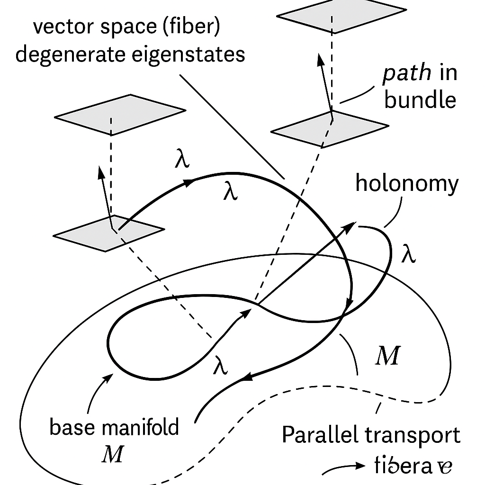
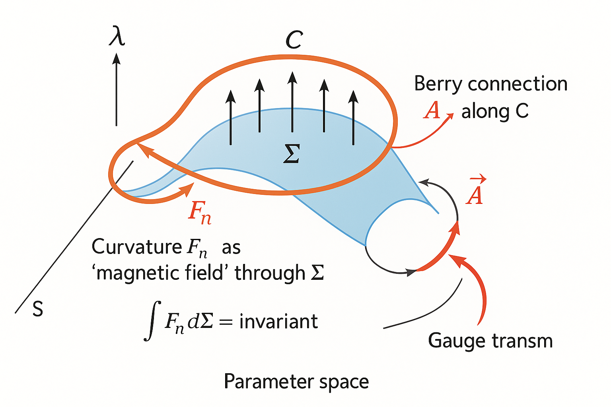
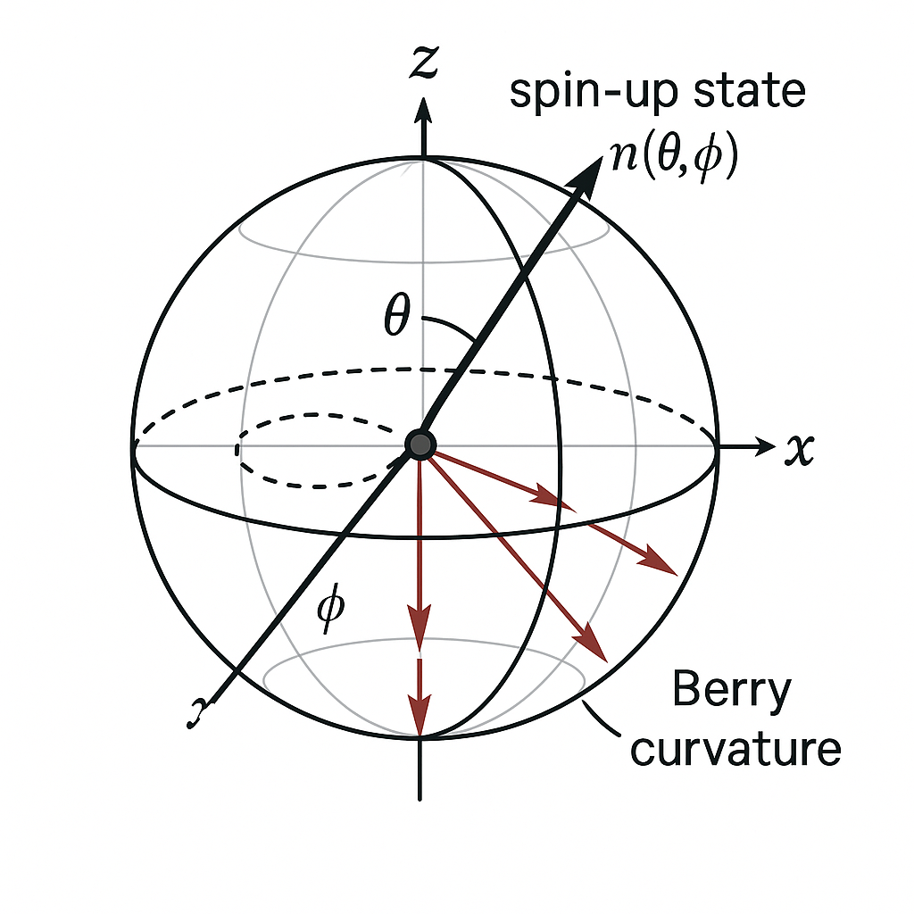
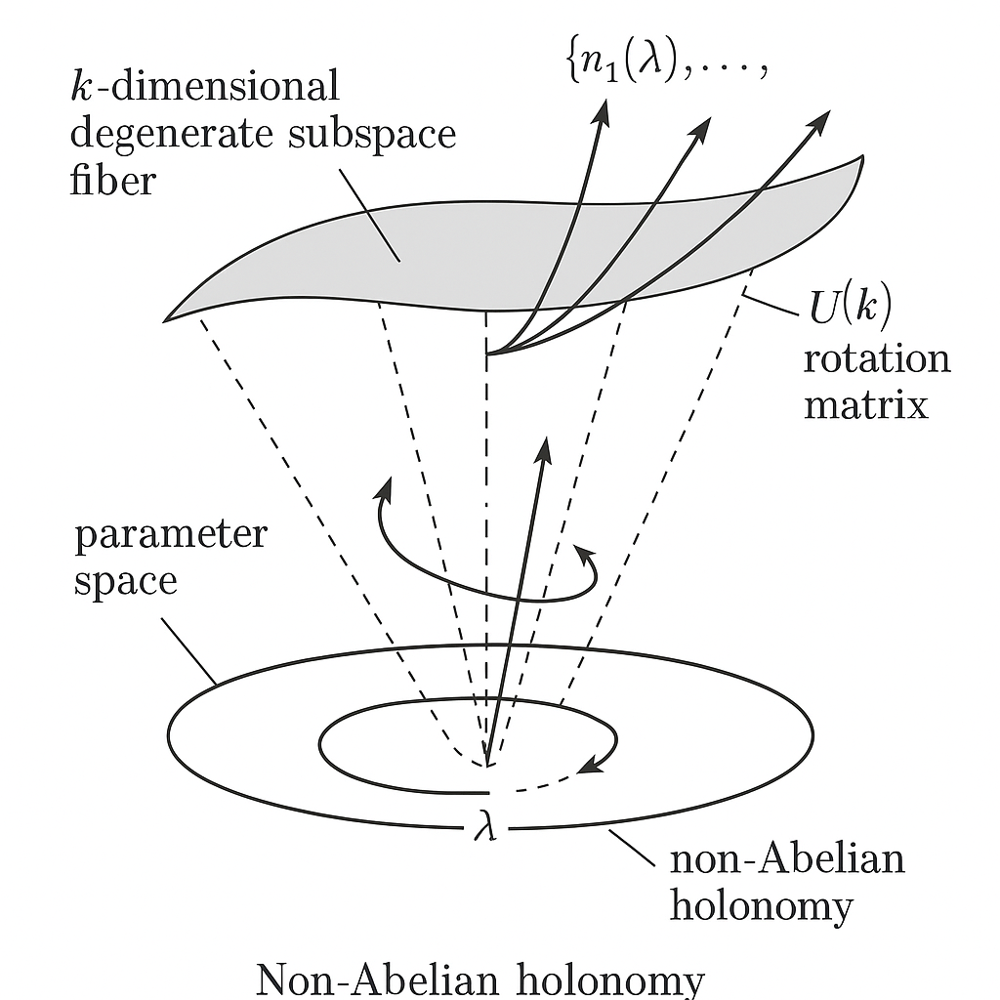
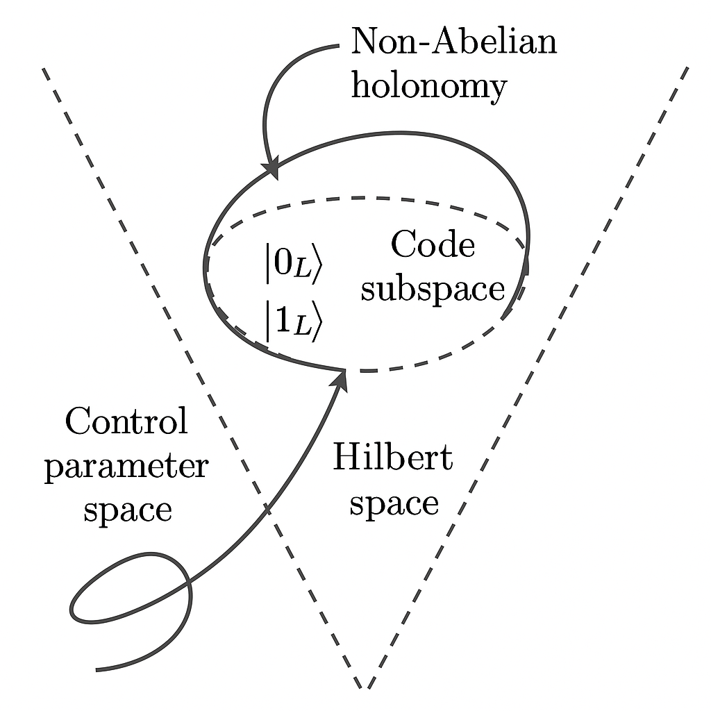
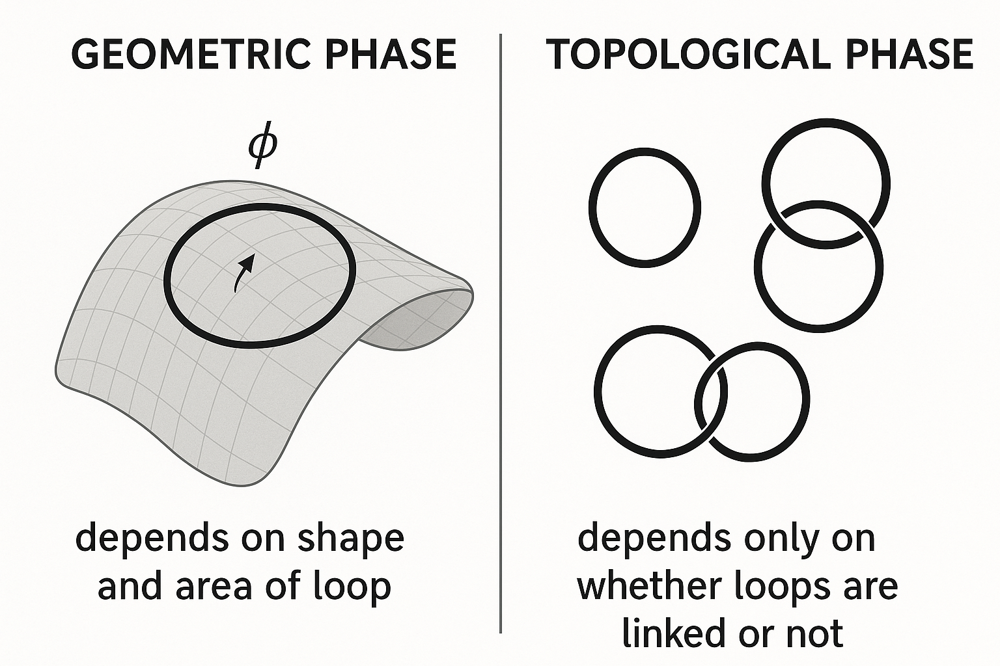
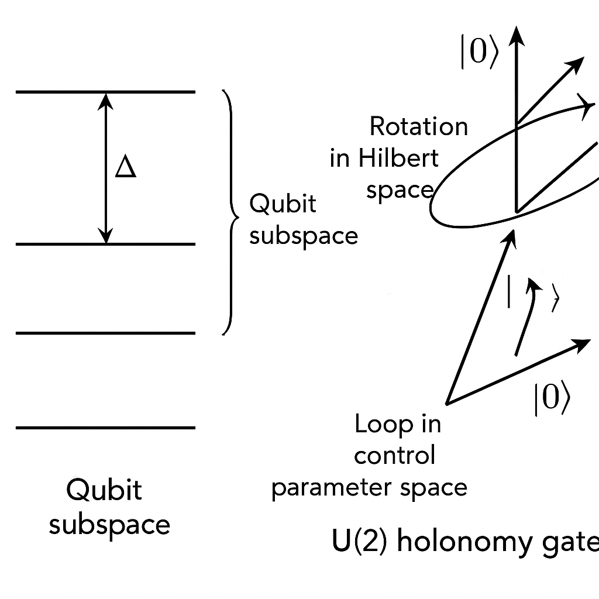

Generated by ChatGPT on 2025-12-11
逐字稿下載：ChatGPT_zh_L01_第_1_講_Holonomic_Quantum_Computation主題_1.txt
完整音檔：
Segment 1:
Segment 2:
Segment 3:
Segment 4:
Segment 5:
Segment 6:
Segment 7:
Segment 8:
Segment 9:
Segment 10:
Segment 11:
Segment 12:
本講作為 Holonomic Quantum Computation（HQC，整體量子計算）的第一個主題，目標是：

在傳統量子力學中，純態由 Hilbert 空間 \(\mathcal{H}\) 中的規範化向量 \[ \ket{\psi} \in \mathcal{H}, \quad \braket{\psi|\psi} = 1 \] 來描述。然而，物理上 \(\ket{\psi}\) 和 \(e^{i\phi}\ket{\psi}\) 完全等價，因為任何可觀測量 \(\hat{O}\) 的期望值 \[ \bra{\psi}\hat{O}\ket{\psi} = \bra{\psi}e^{-i\phi}\,\hat{O}\,e^{i\phi}\ket{\psi} \] 不會受到整體相位 \(\phi\) 影響。
因此，真正的物理態不是 \(\mathcal{H}\) 的向量，而是等價類 \[ [\psi] = \{\; e^{i\phi}\ket{\psi} \mid \phi \in \mathbb{R} \;\}, \] 這些等價類的集合構成射影 Hilbert 空間 \[ \mathbb{P}(\mathcal{H}) \equiv \mathcal{H}/U(1). \] 對有限維 \(d\) 維 Hilbert 空間，\(\mathcal{H} \simeq \mathbb{C}^d\)，其射影空間是複射影空間 \[ \mathbb{CP}^{d-1}. \]

直覺： Bloch 球是 \(\mathbb{CP}^1\) 的幾何圖像，一個量子位的所有純態（忽略整體相位）剛好對應到球面上的每一點。HQC 的核心思想是：沿著某個外部參數空間中的閉合路徑，讓量子態在射影 Hilbert 空間中做平行運輸，藉由幾何結構所產生的 holonomy 來實現量子閘。
考慮一族參數依賴的 Hamiltonian \[ H(\lambda), \quad \lambda \in \mathcal{M}, \] 其中 \(\mathcal{M}\) 是某個平滑參數流形（例如磁場方向空間、控制場空間等）。假設 \(H(\lambda)\) 的某一能階（或簡併能譜子空間）隨 \(\lambda\) 而變化，則在每個 \(\lambda\) 上對應有一個子空間 \(\mathcal{H}_\lambda \subset \mathcal{H}\)。這樣，我們在 \(\mathcal{M}\) 上得到一個向量纖維叢（vector bundle）： \[ \pi: \mathcal{E} \to \mathcal{M}, \quad \pi^{-1}(\lambda) = \mathcal{H}_\lambda. \]
幾何觀點：

在量子力學中，薛丁格演化在絕熱近似下自然提供了一種平行運輸規則。這一點是 Berry phase 與 Holonomic Quantum Computation 的數學基礎。
考慮時間依賴 Hamiltonian \(H(t) = H(\lambda(t))\)，假設對每個 \(t\) 存在離散、非簡併的能譜 \[ H(t)\ket{n(t)} = E_n(t)\ket{n(t)}, \quad n = 0,1,2,\dots \] 並且本徵態 \(\ket{n(t)}\) 被選擇為在 \(t\) 上平滑變化。絕熱定理（非嚴格版本）指出：若 \(H(t)\) 變化足夠緩慢且能隙不閉合，則若初態為某一瞬時本徵態 \(\ket{n(0)}\)，則在後續演化中系統將保持在同一能譜分支上，不產生到其他能階的躍遷。
更精確地，薛丁格方程 \[ i\hbar \frac{d}{dt}\ket{\psi(t)} = H(t)\ket{\psi(t)} \] 有一個近似解 \[ \ket{\psi(t)} \approx e^{i\alpha_n(t)} e^{i\gamma_n(t)} \ket{n(t)}, \] 其中：
如果時間依賴來自參數路徑 \(\lambda(t)\)，則幾何相位可以寫成線積分的形式 \[ \gamma_n[\lambda(\cdot)] = \int_{\lambda(0)}^{\lambda(t)} \mathcal{A}_n(\lambda) \cdot d\lambda, \] 其中 \[ \mathcal{A}_n(\lambda) = i \braket{n(\lambda)|\nabla_\lambda n(\lambda)} \] 稱為 Berry 連接（Berry connection）。
注意到本徵態的選擇存在 規範自由度： \[ \ket{n(\lambda)} \to e^{i\chi_n(\lambda)}\ket{n(\lambda)}, \] 在此變換下 \(\mathcal{A}\) 下標 n，當作 lambda 的函數，映射成 \(\mathcal{A}\) 下標 n，當作 lambda 的函數，加上對 lambda 的梯度，作用在 chi 下標 n，當作 lambda 的函數。」-->\[ \mathcal{A}_n(\lambda) \to \mathcal{A}_n(\lambda) + \nabla_\lambda \chi_n(\lambda), \] 這與 Abelian U(1) gauge field 的規範變換形式相同。幾何相位對於規範變換的行為為：
由 Stokes 定理，我們可將閉路徑的幾何相位寫成參數空間中某一 2-維面積 \(\Sigma\) 上的曲率（Berry curvature）通量 \[ \gamma_n(\mathcal{C}) = \int_{\Sigma,\, \partial\Sigma=\mathcal{C}} \mathcal{F}_n(\lambda)\cdot d\mathbf{S}, \] 其中 Berry 曲率 \[ \mathcal{F}_n(\lambda) = \nabla_\lambda \times \mathcal{A}_n(\lambda). \]

直覺類比： Berry 連接 \(\mathcal{A}_n\) 就像是參數空間中的向量勢，Berry 曲率 \(\mathcal{F}_n\) 則像是「磁場」。閉合路徑上的幾何相位就像「磁通量」，只取決於路徑所包圍的曲率積分，而與具體走的快慢、時間參數化無關——這正是「幾何」而非「動力學」的特性。
考慮單一自旋-\(\tfrac{1}{2}\) 粒子在外磁場 \(\mathbf{B}\) 中，其 Hamiltonian 為 \[ H = -\mu \mathbf{B}\cdot \boldsymbol{\sigma}, \] 其中 \(\mu\) 為磁矩常數，\(\boldsymbol{\sigma} = (\sigma_x, \sigma_y, \sigma_z)\) 是 Pauli 矩陣。令 \[ \mathbf{B} = B \,\hat{\mathbf{n}}, \quad \hat{\mathbf{n}} = (\sin\theta\cos\phi, \sin\theta\sin\phi, \cos\theta), \] 則 Hamiltonian 可寫成 \[ H(\theta,\phi) = -\mu B\, \hat{\mathbf{n}}\cdot \boldsymbol{\sigma}. \] 其本徵值為 \(\pm\mu B\)，分別對應自旋沿 \(\hat{\mathbf{n}}\) 的上下態。
選擇「自旋沿 \(\hat{\mathbf{n}}\) 向上」的本徵態為 \[ \ket{+(\theta,\phi)} = \begin{pmatrix} \cos\frac{\theta}{2} \\ e^{i\phi} \sin\frac{\theta}{2} \end{pmatrix}, \] 這是布洛赫球座標中最常見的表示。可以驗證 \[ H(\theta,\phi)\ket{+(\theta,\phi)} = -\mu B \ket{+(\theta,\phi)}. \]
Berry 連接的分量定義為 \[ \mathcal{A}_\theta = i\braket{+|\partial_\theta +},\quad \mathcal{A}_\phi = i\braket{+|\partial_\phi +}. \] 直接計算可得 \[ \mathcal{A}_\theta = 0,\quad \mathcal{A}_\phi = \frac{1 - \cos\theta}{2}. \] 因此 Berry 曲率為 \[ \mathcal{F}_{\theta\phi} = \partial_\theta \mathcal{A}_\phi - \partial_\phi \mathcal{A}_\theta = \partial_\theta \mathcal{A}_\phi = \frac{\sin\theta}{2}. \] 這正是「磁單極」在球面上產生的類似磁場分布，其總「磁通量」為 \[ \int_0^\pi d\theta \int_0^{2\pi} d\phi\, \mathcal{F}_{\theta\phi} = \int_0^\pi d\theta \int_0^{2\pi} d\phi\, \frac{\sin\theta}{2} = 2\pi. \]

若磁場方向 \(\hat{\mathbf{n}}(t)\) 在一個時間週期 \(T\) 內沿著球面上的閉合路徑 \(\mathcal{C}\) 緩慢變化，並保持系統在「沿 \(\hat{\mathbf{n}}\) 向上」的瞬時本徵態中，則其所累積之 Berry 相位為 \[ \gamma_+(\mathcal{C}) = \oint_{\mathcal{C}} \mathcal{A} \cdot d\lambda = \int_\Sigma \mathcal{F}_{\theta\phi}\, d\theta\, d\phi = \frac{1}{2}\Omega(\Sigma), \] 其中 \(\Omega(\Sigma)\) 是路徑 \(\mathcal{C}\) 在 Bloch 球上所包圍的 有向實體角（solid angle）。
重要結論： 對自旋-\(\tfrac{1}{2}\) 而言，Berry 相位等於半個實體角。這個結果完全不依賴 Hamiltonian 隨時間變化的「速率」，只要絕熱條件成立，路徑的形狀（在球面上的幾何）決定了最終相位。這顯示出幾何相位的路徑形狀依賴與速率無關性。
Holonomic Quantum Computation 要使用的是 非阿貝爾幾何相位，對應到 簡併能階 的情形。在這種情況下，絕熱演化不僅僅給每個能譜分支一個純相位，而是給出一個作用在簡併子空間上的 單位矩陣。
假設對每個參數 \(\lambda\) 存在一個 \(k\)-重簡併 的能階 \(E(\lambda)\)，對應的本徵空間 \(\mathcal{H}_\lambda^{(k)}\) 維度為 \(k\)，其正交規範基底可寫為 \[ \{\ket{n_a(\lambda)}\}_{a=1}^k,\quad H(\lambda)\ket{n_a(\lambda)} = E(\lambda)\ket{n_a(\lambda)}. \] 我們可將 \(\mathcal{H}_\lambda^{(k)}\) 看作在 \(\mathcal{M}\) 上形成一個 rank-\(k\) 的向量叢。
在絕熱近似下，如果初始態在此簡併子空間之內，且系統隨 \(\lambda(t)\) 緩慢變化，則在時間 \(t\) 後的態仍在該子空間中，可展開為 \[ \ket{\psi(t)} = \sum_{a=1}^k c_a(t)\ket{n_a(\lambda(t))}. \] 把這個展開帶入薛丁格方程 \[ i\hbar \frac{d}{dt}\ket{\psi(t)} = H(\lambda(t))\ket{\psi(t)}, \] 先計算時間微分： \[ \frac{d}{dt}\ket{\psi(t)} = \sum_a \dot{c}_a(t)\ket{n_a(\lambda(t))} + \sum_a c_a(t)\frac{d}{dt}\ket{n_a(\lambda(t))}. \]
另一方面，右邊為 \[ H(\lambda(t))\ket{\psi(t)} = E(\lambda(t)) \sum_a c_a(t)\ket{n_a(\lambda(t))}. \] 左邊乘上 \(\bra{n_b(\lambda(t))}\) 得 \[ i\hbar \dot{c}_b(t) + i\hbar \sum_a c_a(t)\braket{n_b|\dot{n}_a} = E(\lambda(t)) c_b(t). \] 搬移項目後可寫成 \[ i\hbar \dot{c}_b(t) = E(\lambda(t)) c_b(t) - i\hbar \sum_a c_a(t)\braket{n_b|\dot{n}_a}. \]
若我們事先將動力學相位因子分離：令 \[ c_b(t) = e^{-\frac{i}{\hbar}\int_0^t E(\lambda(t'))dt'}\, \tilde{c}_b(t), \] 則代入並化簡後可得（動力學相位消除） \[ i \dot{\tilde{c}}_b(t) = \sum_a \mathcal{A}_{ba}(t)\,\tilde{c}_a(t), \] 其中 \[ \mathcal{A}_{ba}(t) = i \braket{n_b(\lambda(t)) | \dot{n}_a(\lambda(t))}. \]
將其視為隨時間變化的 \(k \times k\) 反 Hermitian 矩陣（因為 \(\mathcal{A}\) 是 \(U(k)\) Lie 代數值的連接），其形式解為 \[ \tilde{\mathbf{c}}(t) = \mathcal{P} \exp\left( -i \int_0^t \mathcal{A}(t')\,dt' \right) \tilde{\mathbf{c}}(0), \] 其中 \(\mathcal{P}\) 是 路徑序（path-ordering）。等價地，以參數路徑 \(\lambda(t)\) 表示 \[ \mathcal{A}_\mu(\lambda)_{ba} = i\braket{n_b(\lambda)|\partial_{\lambda^\mu} n_a(\lambda)}, \] 則幾何演化算符可寫為 \[ U_\text{geom}[\mathcal{C}] = \mathcal{P} \exp\left( -i\oint_{\mathcal{C}} \mathcal{A}_\mu(\lambda) d\lambda^\mu \right) \in U(k). \] 這就是 Wilczek–Zee 非阿貝爾幾何相位。

如同 Abelian 情況有 Berry 曲率，Non-Abelian 情況下定義 場強張量（curvature） 為 \[ \mathcal{F}_{\mu\nu} = \partial_\mu \mathcal{A}_\nu - \partial_\nu \mathcal{A}_\mu - i[\mathcal{A}_\mu,\mathcal{A}_\nu], \] 其中 \(\mathcal{A}_\mu\) 是 \(U(k)\) Lie 代數值的連接 1-形式。對一個足夠小的封閉迴圈 \(\mathcal{C}\) 所對應的小面積 \(\Sigma\)，holonomy 近似為 \[ U_\text{geom}[\mathcal{C}] \approx \exp\left( -i \int_\Sigma \mathcal{F}_{\mu\nu}\, d\lambda^\mu \wedge d\lambda^\nu \right). \]
整個參數空間上的所有 holonomy 矩陣 \[ \mathcal{H} = \{ U_\text{geom}[\mathcal{C}] \mid \mathcal{C} \text{ 為閉合路徑} \} \] 構成一個子群 \(\mathcal{H} \subseteq U(k)\)，稱作 holonomy 群。對 Holonomic Quantum Computation 而言，若我們能透過可控的閉合路徑實現足夠豐富的 holonomy，使得 \[ \mathcal{H} \supseteq SU(k) \ \text{（或至少生成一組通用量子閘）}, \] 則該幾何結構可用來實現通用量子計算。
關鍵要點：
在 Holonomic Quantum Computation 中，我們通常假設：

, |1_L> embedded in a larger Hilbert space. A loop in control parameter space returns the Hamiltonian to its initial value while the code subspace undergoes a non-Abelian holonomy representing a quantum gate.">總結來說：Holonomic Quantum Computation 利用絕熱幾何演化在簡併子空間上產生的非阿貝爾 holonomy 作為量子邏輯閘的實現機制。這些運算只依賴於參數空間中的幾何路徑，而非具體的時間歷程。
假設在參數空間 \(\mathcal{M}\) 上有一個 \(k\)-維向量叢 \(\mathcal{E}\)，並在每一點 \(\lambda\) 上的纖維 \(\mathcal{H}_\lambda^{(k)}\) 內選擇局部正交基 \(\{\ket{\xi_a(\lambda)}\}_{a=1}^{k}\)。定義 \[ \mathcal{A}_\mu(\lambda)_{ab} = i\braket{\xi_a(\lambda)|\partial_{\lambda^\mu}\xi_b(\lambda)}, \] 則絕熱幾何演化對任一閉合路徑 \(\mathcal{C}\) 產生的幾何運算為 \[ U_\text{HQC}(\mathcal{C}) = \mathcal{P} \exp\left( - i \oint_{\mathcal{C}} \mathcal{A}_\mu(\lambda)\,d\lambda^\mu \right). \]
若我們的編碼空間為 \(\mathcal{H}_\text{code}\) ，其對應維度 \(k = 2^n\)（\(n\) 個邏輯量子位），且通過精心設計的控制參數路徑集合 \(\{\mathcal{C}_j\}\) 可以產生一組生成元 \[ \mathcal{G} = \{ U_\text{HQC}(\mathcal{C}_j)\} \] 使得所生成的群 \[ \langle \mathcal{G} \rangle \supseteq SU(2^n), \] 那麼理論上即可實現通用量子運算。
關鍵數學問題： 對給定的 Hamiltonian 家族 \(H(\lambda)\) 與簡併子空間，如何計算其 Berry 連接 \(\mathcal{A}_\mu\) 與曲率 \(\mathcal{F}_{\mu\nu}\)，並分析 holonomy 群的結構？這是 HQC 建構中非常重要的「幾何設計問題」。
幾何相位牽涉的是「在參數空間中的路徑形狀」，而不取決於「我們走這條路徑的速度函數」。形式上，只要時間重參數化保持路徑 \(\mathcal{C}\) 的軌跡不變，holonomy \(U_\text{HQC}(\mathcal{C})\) 就不變。
因此，如果控制系統中存在某些 時間上的小抖動（比如說在路徑的不同段上稍微快一點或慢一點），但空間路徑形狀保持不變，則對最終的幾何閘影響極小。這是 HQC 被認為具有某種「幾何穩健性」的原因。
需要小心理解的是，「幾何相位」並不等於「拓撲不變量」。在 Berry phase 與 Wilczek–Zee phase 中：
Holonomic Quantum Computation 多數實現屬於 幾何量子計算，而非嚴格意義上的 拓撲量子計算（如 non-Abelian anyons 的編織）。然而，透過適當的設計，有可能利用幾何結構構造與拓撲量子計算類似的穩健特性，這是當代研究的一個方向。

為了在後續講次深入具體模型（例如三能級 Lambda 系統、超導量子比特中的幾何閘等），這裡先給出一個抽象但清晰的「二維簡併子空間」範例框架，說明如何看到 Non-Abelian Berry 連接。
考慮一個三能級系統，Hilbert 空間 \(\mathcal{H} \simeq \mathbb{C}^3\)，基底為 \(\{\ket{1},\ket{2},\ket{3}\}\)。假設 Hamiltonian 具有一個二重簡併基態空間與一個高能激發態： \[ H(\lambda) = E_0\, P_\text{deg}(\lambda) + E_1\, P_\perp(\lambda), \] 其中
令簡併子空間的基底為 \[ \ket{\xi_1(\lambda)},\ \ket{\xi_2(\lambda)}, \] 滿足 \[ H(\lambda)\ket{\xi_a(\lambda)} = E_0 \ket{\xi_a(\lambda)}. \] 這兩個態可以看作是我們欲編碼的邏輯量子位 \(\ket{0_L},\ket{1_L}\)。隨著 \(\lambda\) 變化，\(\ket{\xi_a(\lambda)}\) 會在 \(\mathbb{C}^3\) 中轉動，但其對應的能量不變。
當 \(\lambda(t)\) 沿參數空間中的閉合迴圈 \(\mathcal{C}\) 演化時，絕熱過程會在 \(\text{span}\{\ket{\xi_1(\lambda_0)},\ket{\xi_2(\lambda_0)}\}\) 上產生一個 \(2\times 2\) 的幾何閘 \[ U_\text{HQC}(\mathcal{C}) \in U(2). \] 透過適當設計 \(\lambda(t)\) 的路徑，可使該矩陣對應到我們想要的邏輯閘（如 Hadamard、phase gate、或兩量子位 CNOT 的一部分），這就是 HQC 的運作思路。

對本例，Berry 連接在參數空間上的分量為 \[ \mathcal{A}_\mu(\lambda)_{ab} = i\braket{\xi_a(\lambda)|\partial_{\lambda^\mu}\xi_b(\lambda)}, \quad a,b = 1,2. \] 假設我們可以顯式寫出 \[ \ket{\xi_1(\lambda)} = \cos\frac{\theta(\lambda)}{2}\ket{1} + \sin\frac{\theta(\lambda)}{2}e^{i\phi(\lambda)}\ket{2}, \] \[ \ket{\xi_2(\lambda)} = -\sin\frac{\theta(\lambda)}{2}e^{-i\phi(\lambda)}\ket{1} + \cos\frac{\theta(\lambda)}{2}\ket{2}, \] 並令 \(\ket{3}\) 為高能激發態（此處僅做示意，實際模型需要 Hamiltonian 的具體形式來保證簡併與能隙）。則 \[ \mathcal{A}_\mu(\lambda) = \begin{pmatrix} i\braket{\xi_1|\partial_\mu \xi_1} & i\braket{\xi_1|\partial_\mu \xi_2}\\ i\braket{\xi_2|\partial_\mu \xi_1} & i\braket{\xi_2|\partial_\mu \xi_2} \end{pmatrix}. \] 可顯示 \(\mathcal{A}_\mu\) 一般為 \(su(2)\) Lie 代數中的矩陣線性組合 \[ \mathcal{A}_\mu(\lambda) = \mathbf{a}_\mu(\lambda)\cdot \frac{\boldsymbol{\sigma}}{2} + \text{(trace 部分)}\cdot \mathbb{I}, \] 其中 \(\boldsymbol{\sigma}\) 是 Pauli 矩陣。trace 部分只會給出整體的 U(1) 相位，而 \(su(2)\) 部分決定了非平凡的量子閘結構。
當繞一個閉合迴圈 \(\mathcal{C}\) 時，holonomy 為 \[ U_\text{HQC}(\mathcal{C}) = \mathcal{P}\exp\left( -i\oint_{\mathcal{C}} \mathbf{a}_\mu(\lambda)\cdot \frac{\boldsymbol{\sigma}}{2} \, d\lambda^\mu \right)\times e^{-i\phi_\text{global}}, \] 其中 \(e^{-i\phi_\text{global}}\) 是不影響邏輯運算的整體相位。適當選擇路徑 \(\mathcal{C}\)，可以得到任意所需的 \(SU(2)\) 旋轉，從而實現任意單一邏輯量子位閘。
本講從量子態空間的幾何出發，建立了 Holonomic Quantum Computation 所依託的核心數學結構：
在接下來的講次中，我們將：